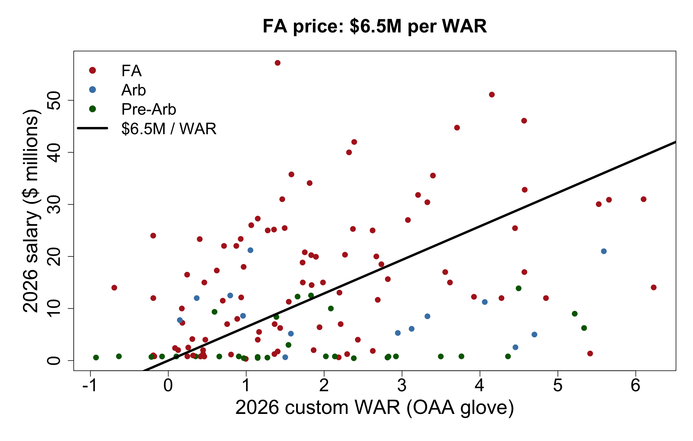
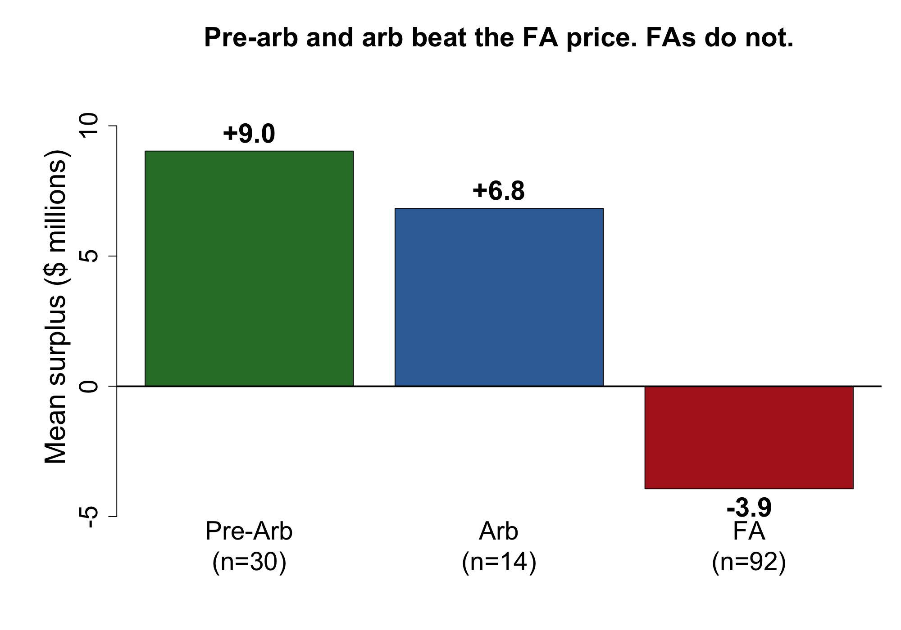
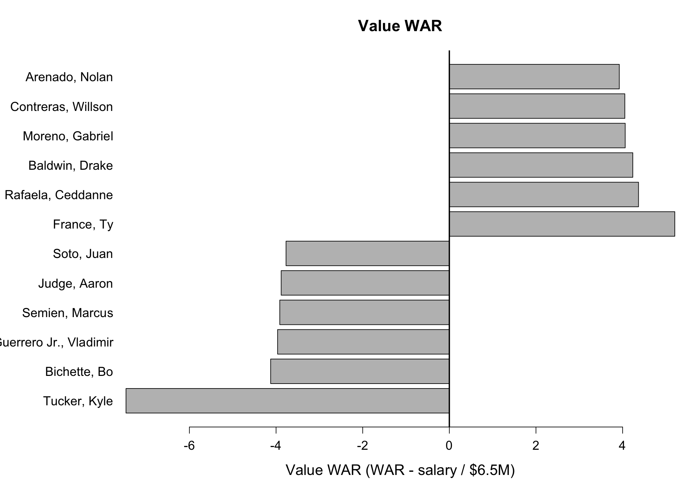

Custom Statcast WAR with an OAA glove, then a free-agent price per win
Henry Blaney
MLB teams spend very unevenly. In 2026 the Mets spent more than $350 million and finished last in the NL East; the Marlins, with an $85 million payroll, came in third. Spending does not guarantee winning. What matters is whether teams pay for the right players.
Labor rules split the market into three tiers:
Comparing performance to pay needs one currency for performance. WAR converts hitting and fielding into runs, compares the player with a freely available replacement, and turns runs into wins. Because wins are what teams are buying, a dollars-per-WAR number can be compared across players and contract types.
Question. Can WAR explain 2026 position-player salaries, and which players are worth more or less than they are paid?
We build WAR ourselves rather than downloading FanGraphs or Baseball-Reference values, so every modeling choice is visible. The steps are: download and clean Statcast, compute batting runs above average, attach Statcast Outs Above Average as the glove, convert to WAR with a replacement level, join salaries, estimate the market price of a win from free agents, and compute surplus and value WAR.
An earlier glove used xBA leftovers. This memo uses OAA. See §3.1.
Pitch-level 2026 regular-season Statcast from Baseball Savant via sabRmetrics::download_baseballsavant(). Each row has game state, the pitch outcome, batted-ball measurements, and MLBAM IDs for the batter, pitcher, and fielders. A full-season pull is cached as statcast_2026.rds (not in the repo). The file has 716,792 pitches.
The events column is filled only on the last pitch of a plate appearance, so dropping missing events gives one row per PA: 184,178 plate appearances. Each PA row carries delta_run_exp for that last pitch.
2026 salaries were collected by hand from Spotrac into salaries_2026.csv. Columns: batter_id (MLBAM), team, name, salary, service_class (Pre-Arb / Arb / FA), extension flag, notes. This is the only external file that cannot be rebuilt from Savant. Join is on batter_id, not name, because First Last vs Last, First will drop or double-count people.
361 salary rows. After an inner join to the 390 regulars and dropping blank pay, 136 players have both WAR and a salary: 92 FA, 14 arb, 30 pre-arb. Players with a salary but no WAR are outside the top 390 in PA, often because of injury. They drop out of the surplus tables, which makes the overpaid list look cleaner than reality.
2026 Baseball Savant Outs Above Average leaderboard (data/oaa_2026.csv), 563 fielders, minimum 1 opportunity. Columns we use: player_id, outs_above_average, fielding_runs_prevented, primary position. Catchers are not on this board.
The first glove scored each ball in play as expected_babip − hit, credited whoever hit_location said handled the ball, summed, and multiplied by 1/3 to get to runs. xBA is exit velocity and launch angle only. A liner at the second baseman and a liner in the gap get the same expected hit rate, so converting a hard grounder you were standing on looked like extra defense. Errors and fielder’s choices coded as non-hits added credit. Home runs charged fielders for balls nobody could catch. Credit went to whoever picked the ball up, not who should have made the play.
That glove put Brandon Lowe first overall: 8.0 WAR and +32 fielding runs as a second baseman. Pete Crow-Armstrong, an elite CF, had +1.8 fielding runs. That ranking was the model.
This version uses Statcast Outs Above Average. OAA is a range model: given starting position, where the ball went, and hang time, did you get there? Hard contact is in that through time. Savant already translates those outs into runs with a position-specific factor, fielding_runs_prevented. We join on MLBAM id and take that as fielding RAA. Players not on the leaderboard (catchers, DH, no chances) get 0.
After the swap:
| xBA glove | OAA glove | |
|---|---|---|
| Crow-Armstrong | 7.9 WAR, +1.8 fielding | 10.1 WAR, 26 OAA / +23 runs |
| Brandon Lowe | 8.0 WAR, +32 fielding | 5.9 WAR, 15 OAA / +11 runs |
PCA is a glove-first center fielder. Lowe is a good regular. That is why OAA is the glove in this memo.
Willson Contreras is a catcher. He shows 1 OAA / 0 runs prevented as a 1B on the Savant board; his 6.2 WAR is almost entirely bat plus replacement. Catcher framing, blocking, and throwing are not here.
For each batter, count PA and sum delta_run_exp on PA-ending pitches. Compare him with a league-average hitter given the same playing time:
RAA_b = off_runs − r̄ × PA, where r̄ is league offensive runs per PA.
League average is about 0.0068 runs per PA. Run expectancy is built so the average outcome adds almost nothing, so a number that small is expected. This is hitting only. Summing the last pitch of the PA means a walk is ball four, and stolen bases or wild pitches during that PA stay with the batter.
Batters are ranked by PA. The top 390 are the regulars: 13 position-player jobs × 30 teams. The 390th regular has 166 PA. Everyone below that is the replacement pool (call-ups, bench, pitchers who batted).
ρ = (sum of total RAA in the replacement pool) / (sum of PA in the pool).
Replacement level is about −0.038 runs per PA. Over ~650 PA that is roughly 24 runs below average. That gap is the cushion every regular is measured against.
Total RAA = batting RAA + fielding RAA. A replacement player given the same PA would produce ρ × PA. WAR is the gap, at 10 runs per win:
WAR = (RAA − ρ × PA) / 10.
Pre-arb and arb pay are set by the CBA, not by bidding among 30 teams. We estimate the price of a win from free agents only, regression through the origin:
salary ($M) = β × WAR + error, intercept fixed at 0.
A zero-WAR player is freely available and should cost about nothing extra on this scale, so the intercept is zero by construction. Across 92 FAs, β̂ ≈ $6.45 million per WAR. A 3-WAR regular would be worth about $19 million a year on that market.
Expected salary = max(β̂ × WAR, 0). We floor at zero because nobody is paid a negative salary. Surplus = expected − actual. Positive surplus is a bargain relative to 2026 production. Value WAR puts the same gap in wins:
value WAR = WAR − salary / β̂.
If the contract is cheap, you subtract almost nothing. If the AAV is $40 million, the player has to put up about 6.2 WAR in that season to break even.
A second regression, with an intercept, is only for “does WAR explain salary?” It is not the price we use for surplus. Among FAs that fit is intercept ≈ $9.9M, slope ≈ $3.37 per extra WAR, R² = 0.17. Even a replacement-level FA still gets paid a large base; extra WAR does not map one-for-one onto extra dollars. Mixing that intercept with the $6.45M through-origin line as if they were the same model would be wrong.
| Player | PA | Batting RAA | OAA | Fielding runs | WAR |
|---|---|---|---|---|---|
| Pete Crow-Armstrong | 726 | 50.9 | 26 | +23 | 10.1 |
| Yordan Alvarez | 691 | 49.9 | −3 | −3 | 7.3 |
| Willson Contreras | 536 | 42.2 | 1 | 0 | 6.2 |
| Pete Alonso | 701 | 34.7 | 0 | 0 | 6.1 |
| Randy Arozarena | 671 | 38.7 | −5 | −4 | 6.0 |
| Brandon Lowe | 656 | 23.5 | 15 | +11 | 5.9 |
Crow-Armstrong is first because the bat was already excellent and OAA finally counts CF range. Alvarez is almost all bat. Lowe is no longer an 8-WAR second baseman.
FA correlation, WAR vs salary: 0.41. All 136 paid players: a bit lower. With an intercept, WAR explains 16.9% of the spread in FA salary (p < 0.001). 2026 WAR does not explain 2026 FA pay. That is what we should expect. A contract is priced on expected performance over several future years, usually from previous seasons and age. Our WAR is one realized year. Injuries, slumps, breakouts, and aging all move a player off the line.

Figure 1. 2026 salary vs custom WAR, by contract class. Black line is the free-agent price ($6.45M per WAR, through the origin). Pre-arb (green) sits low across the whole WAR range because those salaries are not an open market. Points far above the line on the left are expensive veterans with low 2026 WAR. Points below the line on the right outperformed the contract this year.
We still use that line as the sticker price of a win when we compute surplus. Weak correlation is the answer to question 1, not a reason to throw out the price.

Figure 2. Mean surplus vs the FA price.
| Class | n | Mean WAR | Mean salary | Mean surplus |
|---|---|---|---|---|
| Pre-arb | 30 | 1.85 | $3.3M | +$9.0M |
| Arb | 14 | 2.47 | $9.1M | +$6.8M |
| FA | 92 | 1.92 | $16.4M | −$3.9M |
When the bargain list is heavy on pre-arb and arb, that is the CBA. Young stars are cheap by design. The more interesting bargains are free agents, because those teams chose the price.

Figure 3. Value WAR = on-field WAR minus wins the contract bought at $6.45M per win.
High. Ty France (FA): 5.4 WAR, $1.35M, value WAR +5.2, surplus about +$34M. He signed what was effectively a flyer, then played like a regular (29 batting runs, 8 OAA / +6 runs at first base). That gap is the contract, not a forecast that he is a $34 million player next winter.
Other high value WAR: Ceddanne Rafaela (pre-arb), Drake Baldwin (pre-arb), Gabriel Moreno (arb), Willson Contreras (FA, $14.1M, 6.2 WAR), Nolan Arenado (arb, $5M).
Roughly fair. Pete Alonso: 6.1 WAR at $31M, value WAR +1.3.
Low. Kyle Tucker (LAD): $57.2M, 1.4 WAR (−8 OAA in RF), value WAR −7.5, surplus about −$48M. The Dodgers paid for several years as one of the better all-around outfielders. 2026 was a down year, and almost no single season covers $57M at $6.5M per win.
Also low: Bo Bichette, Vladimir Guerrero Jr., Marcus Semien, Aaron Judge (1.6 WAR in 285 PA at $40M — playing time as much as rate), Juan Soto. Shohei Ohtani appears overpaid on this board because this WAR is a hitter WAR. Pitching is not in the number. Don’t read him as a failed $46M bat without saying that.
sabRmetrics. OAA leaderboard: outs above average.Code that rebuilds WAR and the figures is analysis.qmd in the same repo.